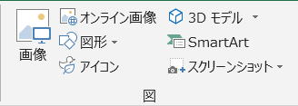

ShapesとDrawingObjectsの相違点と使い方

マクロVBAで図（オートシェイプ等）を扱う時にいろいろ調べていくと、
図（オブジェクト）のコレクションが二つあることに気づきます。
Shapes コレクション
DrawingObjects コレクション
WEBのサンプルや書籍では多くはShapesが使われているはずですが、時々DrawingObjectsを見かけることもあります。
VBAではShapesとDrawingObjectsのどちらを使っても、目的の図（オートシェイプ等）を扱う事が出来ます。
本サイト内でも、基本的にはShapesですが、DrawingObjectsを紹介しているページもあります。
オートシェイプを他ブックの同じ位置に貼り付ける（Shapes,DrawingObjects）
DrawingObjectsは古いVBAにあったもので、互換性のために残されているものになります。
従って現在では、非表示メンバになっています。
この二つのコレクションの相違点を確認し、どのような場合にDrawingObjectsを使うと便利かを考えてみます。
Shapes コレクション
Shapeオブジェクトの詳細については、
第97回.図形オートシェイプ（Shape）
DrawingObjectsとの比較のためにメンバーの一覧を見てみます。
| プロパティ | Application |
| Count | |
| Creator | |
| Parent | |
| Range | |
| メソッド | AddCallout |
| AddChart2 | |
| AddConnector | |
| AddCurve | |
| AddFormControl | |
| AddLabel | |
| AddLine | |
| AddOLEObject | |
| AddPicture | |
| AddPicture2 | |
| AddPolyline | |
| AddShape | |
| AddSmartArt | |
| AddTextbox | |
| AddTextEffect | |
| Add3DModel | |
| BuildFreeform | |
| Item | |
| SelectAll |
そんなに数は多くありません。
VBAのコレクションの多くは、プロパティ・メソッドは少なめになっています。
DrawingObjects コレクション
と言いたいところですが、この表現はあまり正確とは言えません。
DrawingObjectというデータ型は存在していません。
DrawingObjectという特定のデータ型は存在していないので、Object型のコレクションとなっています。
オブジェクトブラウザで確認する場合は、右クリックから「非表示メンバを表示」で表示させてください。
DrawingObjects コレクションのメンバー
| プロパティ | _Default |
| Accelerator | |
| AddIndent | |
| Application | |
| ArrowHeadLength | |
| ArrowHeadStyle | |
| ArrowHeadWidth | |
| AutoSize | |
| Border | |
| CancelButton | |
| Caption | |
| Characters | |
| Count | |
| Creator | |
| DefaultButton | |
| DismissButton | |
| Display3DShading | |
| DisplayVerticalScrollBar | |
| DropDownLines | |
| Enabled | |
| Font | |
| Height | |
| HelpButton | |
| HorizontalAlignment | |
| InputType | |
| Interior | |
| LargeChange | |
| Left | |
| LinkedCell | |
| ListFillRange | |
| ListIndex | |
| Locked | |
| LockedText | |
| Max | |
| Min | |
| MultiLine | |
| MultiSelect | |
| OnAction | |
| Orientation | |
| Parent | |
| PhoneticAccelerator | |
| Placement | |
| PrintObject | |
| ReadingOrder | |
| RoundedCorners | |
| Shadow | |
| ShapeRange | |
| SmallChange | |
| Text | |
| Top | |
| Value | |
| VerticalAlignment | |
| Visible | |
| Width | |
| ZOrder | |
| メソッド | _Dummy12 |
| _Dummy15 | |
| _Dummy22 | |
| _Dummy28 | |
| _Dummy3 | |
| _Dummy47 | |
| _Dummy54 | |
| _Dummy56 | |
| AddItem | |
| BringToFront | |
| CheckSpelling | |
| Copy | |
| CopyPicture | |
| Cut | |
| Delete | |
| Duplicate | |
| GetEnumerator | |
| Group | |
| Item | |
| LinkCombo | |
| List | |
| RemoveAllItems | |
| RemoveItem | |
| Reshape | |
| Select | |
| Selected | |
| SendToBack | |
| Ungroup | |
| Vertices |
Shapesに比べて非常に多くのメンバーがあることがお分かりいただけると思います。
DrawingObjectsメンバ
このページは、「以前のバージョンのドキュメント」として残されているページになります。
ShapesとDrawingObjectsの相違点
DrawingObjectsは古いVBAで、互換性のために残されている非表示メンバです。
互換性としで残されている非表示オブジェクトやコレクションは、
他の新しいオブジェクトやコレクションに引き継がれるのが通常ではありますが、
必ずしも、全てが引き継がれているとは限りません。
中には引き継がれずに、他のオブジェクトやコレクションメンでは扱えなくなっているものも存在します。
少なくとも、DrawingObjectsの代替えとしてShapesが存在していると単純に考えることはできません。
ActiveSheet.DrawingObjects.Count
ActiveSheet.Shapes.Count
これら二つは同じなのでしょうか。（同じとして紹介しているページもあると思います。）
シートに「入力規則」の「リスト」を設定して、
イミディエイトウインドウで、
?ActiveSheet.DrawingObjects.Count
?ActiveSheet.Shapes.Count
上記二つの値を確認してください、違ったはずです。
Shapes.Countの方が1多くなったはずです。
Shapesには、入力規則のドロップダウンが含まれてしまいます。
これにより、以下のようなトラブルが発生します。
入力規則のドロップダウンが消えてしまうマクロ（Shapes内のDrop Down）
Shapeオブジェクトに入っているプロパティ・メソッド
Shapesコレクションではなく、中のShapeオブジェクトに入っているものがあります。
ほんの一部、良く使いそうなものを例に説明すると、
例えばプロパティでは、
PrintObject
これは、Shapeオブジェクト.ControlFormat.PrintObjectとして存在します。
メソッドでは、
Copy
Cut
Delete
Duplicate
これらは、Shapeオブジェクトに存在します。
コレクションにあるプロパティ・メソッドは、コレクション内のすべてのオブジェクトに対して一括で作用します。
オブジェクトのプロパティ・メソッドは、そのオブジェクトのみにしか作用しません。
つまりDrawingObjectsでは、全ての図（オブジェクト）に対して一括で操作できるプロパティ・メソッドが多数存在したが、
Shapesでは、個別のオブジェクトに対して操作しなければならないという事です。
コレクションの要素を指定して取得されるオブジェクトの違い
つまり、Shapes(インデックス)はShapeオブジェクトです。
対して。
DrawingObjectというデータ型は存在していません。
DrawingObjects(インデックス)は、汎用のobject型になります。
?typename(ActiveSheet.DrawingObjects(1))
Rectangle ← この結果はあくまで例として
図（オブジェクト）によって結果はまちまちになります。
TextBox、Picture、・・・
対して、
?typename(ActiveSheet.shapes(1))
Shape
これはShapeオブジェクトなので納得できると思いますが、図の種類がこれでは判別できません。
Shapeの場合は、Typeプロパティで判別します。
?ActiveSheet.Shapes(1).Type
1
この結果は、MsoShapeType列挙の数値になります。
DrawingObjectsの便利な使い道
DrawingObjectsでは、全ての図（オブジェクト）に対して一括で操作できるプロパティ・メソッドが多数存在するので、
そのような場合は、DrawingObjectsが便利に使えるという事になります。
ActiveSheet.DrawingObjects.PrintObject = False
※DrawingObjects(インデックス)にもPrintObjectは存在します。
Dim sp As Shape
For Each sp In ActiveSheet.Shapes
sp.ControlFormat.PrintObject = False
Next
このように一つずつ設定する必要があります。
シートの全ての図を削除する
ActiveSheet.DrawingObjects.Delete
※DrawingObjectsには入力規則のドロップダウンは含まれていません。
Dim sp As Shape
For Each sp In ActiveSheet.Shapes
If Not sp.Name Like "Drop Down*" Then
sp.Delete
End If
Next
このように、入力規則のドロップダウンかを判定して削除しないようにする必要があります。
シートの全ての図を別シートへコピーする
Worksheets(2)のA1セルに貼り付けします。
Worksheets(1).DrawingObjects.Copy
With Worksheets(2)
.Select
.Range("A1").Select
.Paste
End With
Shapesを使った場合
オートシェイプを他ブックの同じ位置に貼り付ける
Selection.Copy
このようなVBA記述をするか、もしくはShape一つずつCopyすることになります。
シートの全ての図を複製して別シートへ移動
Worksheets(2)のA1セルに貼り付けします。
Dim objs As Object
Set objs = Worksheets(1).DrawingObjects.Duplicate
objs.Cut
With Worksheets(2)
.Select
.Range("A1").Select
.Paste
End With
Shapesを使った場合は、
Shapeオブジェクト一つずつに対してDuplicateを実行しなければならず、
この場合なら、Duplicateを使うメリットがないと思います。
図（オブジェクト）のコピーを行うと、その図（オブジェクト）が選択状態になります。
図の選択状態を解除するには、以下のどちらかのVBAで行ってください。
With シート
.Protect
.Unprotect
End With
With シート
.Select
.Range("A1").Select
End With
一般的な方法として、ActiveCell.Activateを使う方法も考えられますが、
DrawingObjectsで複数の図をコピーした時には、ActiveCellが取得できない状態になってしまう為、
ActiveCellでエラーとなってしまいます。
最後に
そもそも図オブジェクトは、多くのオブジェクトをメンバーに持った複雑なオブジェクトとなっていて、全てを把握するのはとても困難なオブジェクトになります。
必要に応じて、都度プロパティ・メソッドを調べられるようにしておけば良いと思います。
このような古いオブジェクト・コレクションは、今後のバージョンアップに際し動作保証されない可能性もありますし、
なにより、信頼すべきドキュメントが見つからない為にVBA記述に苦労することが多々あります。
従って、基本的にはShapesで書くようにしたほうが良いでしょう。
とはいえ、
一括でシートの全ての図に対して操作したい場合は、便利な方法として覚えておくと役に立つこともあると思います。
図形オートシェイプ（Shape）に関連する記事
第97回.図形オートシェイプ（Shape）
同じテーマ「マクロVBA技術解説」の記事
VBA+SeleniumBasicで検索順位チェッカー（改）
Applicationを省略できるApplicationのメソッド・プロパティ一覧
PowerQueryの強力な機能をVBAから利用する方法
ShapesとDrawingObjectsの相違点と使い方
新規挿入可能なシート名の判定
VBAにおける配列やコレクションの起点について
VBAのマルチステートメント（複数のステートメントを同じ行に）
クリップボードに2次元配列を作成してシートに貼り付ける
ユーザー定義型の制限とクラスとの使い分け
シングルクォートの削除とコピー（PrefixCharacter）
空文字列の扱い方と処理速度について（""とvbNullString）
新着記事NEW ・・・新着記事一覧を見る
VBA100本ノック 100本目：WEBから100本ノックのリストを取得｜VBA練習問題（3月3日）
VBA100本ノック 99本目：自動席替え（行列と前後左右が全て違うように）｜VBA練習問題（3月2日）
VBA100本ノック 98本目：席替えルールが守られているか確認｜VBA練習問題（3月1日）
VBA100本ノック 97本目：Accessデータを取得（グループ集計）｜VBA練習問題（2月27日）
VBA100本ノック 96本目：Accessデータを取得（マスタ結合&抽出）｜VBA練習問題（2月26日）
VBA100本ノック 95本目：図形のテキストを検索するフォーム作成｜VBA練習問題（2月24日）
VBA100本ノック 94本目：表範囲からHTMLのtableタグを作成｜VBA練習問題（2月23日）
VBA100本ノック 93本目：複数ブックを連結して再分割｜VBA練習問題（2月22日）
VBA100本ノック 92本目：セルの色を16進で返す関数｜VBA練習問題（2月20日）
VBA100本ノック 91本目：時間計算（残業時間の月間合計）｜VBA練習問題（2月19日）
アクセスランキング ・・・ ランキング一覧を見る
1.最終行の取得（End,Rows.Count）｜VBA入門
2.RangeとCellsの使い方｜VBA入門
3.変数宣言のDimとデータ型｜VBA入門
4.マクロって何？VBAって何？｜VBA入門
5.Range以外の指定方法（Cells,Rows,Columns）｜VBA入門
6.セルのコピー&値の貼り付け（PasteSpecial）｜VBA入門
7.繰り返し処理（For Next)｜VBA入門
8.セルに文字を入れるとは（Range,Value）｜VBA入門
9.マクロはどこに書くの（VBEの起動）｜VBA入門
10.とにかく書いてみよう（Sub,End Sub）｜VBA入門
- ホーム
- マクロVBA応用編
- マクロVBA技術解説
- ShapesとDrawingObjectsの相違点と使い方
このサイトがお役に立ちましたら「シェア」「Bookmark」をお願いいたします。
記述には細心の注意をしたつもりですが、
間違いやご指摘がありましたら、「お問い合わせ」からお知らせいただけると幸いです。
掲載のVBAコードは動作を保証するものではなく、あくまでVBA学習のサンプルとして掲載しています。
掲載のVBAコードは自己責任でご使用ください。万一データ破損等の損害が発生しても責任は負いません。